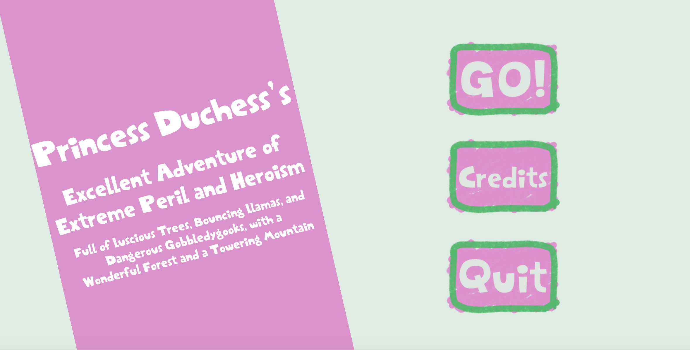

Home
Programming
Design
About
Home
Programming
Design
About
Princess Duchess's Excellent Adventure is a 3D puzzle/ action platformer video game created in Unity that focuses on challenging puzzles and unique monster/ world interactions. It is the final project for a Video Game Design course, which required groups of students to work together to create these final projects.
My group faced challenges, as does any, in designing our game and collaborating effectively. The group - which consisted of four students including myself - was named "Team Work Makes The Dream Work", a comedic play on words, but effectively embodied how we felt what would require to make our game come to life.
Princess Duchess's Excellent Adventure was well received by the professor and classmates, with praise given to player/world and monster/world interaction and the visual style of the game, and received the highest grade in the class.

The narrative and visual style of PD are designed to reflect the style and concepts of children. This gave the game a cute, colorful, and fantastic design that adds to enjoyment in gameplay. My contributions to this style exist in UI, animations, and level design.
Every element of the user interface has been designed purposefully for the childlike visual style. Throughout the different menus is a persistent purple rectangle set on a diagonal, which gives dynamic movement to the visual interface. Icons, including buttons and sliders, and the skybox backdrops have a hand-drawn crayon look to them that match what a child might create. Finally, the font chosen is based on the Captain Underpants children's books, which through familiarity and design imply fun.
Several of the decorations and interactive elements in the game have cute and inviting animations that, while are fairly simple, add to the cute and fun nature of the game.
These animated elements range from simple cacti, flowers, and grass to flag checkpoints and collectable llamas, the last of which are needed to progress in the game. The cel-shaded levels are filled with these interactive and decorative animated objects that liven up the forest and mountain.